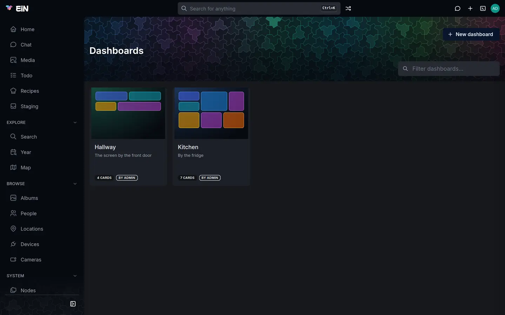
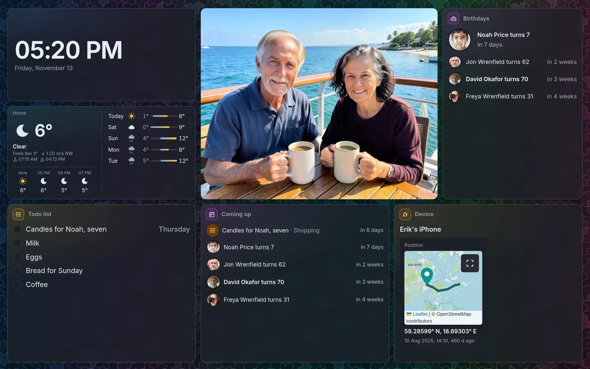

The Dashboards module puts cards together on one page: the time, what is coming up, a picture of the day, a device's readings, a todo list. You choose the cards and arrange them, show the page full screen on a screen on the wall, and give that screen a link so it never has to sign in. The cards come from the modules you have installed: each module offers the cards of what it holds, and a dashboard shows whichever you pick. This page is for everyone who uses EiN.
Install it
Install it from Settings → Modules, or in EiN's terminal:
# in EiN's terminal, as the administrator
mod install dashboardDashboards is then in the sidebar, under System, and Dashboard in the Create New menu. Modules covers installing and removing modules.
Make a dashboard
- Choose Create New → Dashboard, or New dashboard on the Dashboards page.
- Give it a Title, such as "Kitchen", and if you like a Description, such as "By the fridge".
- Choose its Colour: what its page and its wall are drawn in. Every colour runs all of EiN's colours across it; the others are the colours of what EiN holds, such as People violet or Devices orange.
- Choose Who sees it: as you share new things, only you, or everyone with an account. The Share button on its page changes that later, as for an album; see Sharing.
- Choose Create dashboard. It opens, empty, ready to arrange.
The Dashboards page shows every dashboard you can see as a tile. Its picture is the dashboard's layout in small, each card in its colour. Type in Filter dashboards… to narrow them by title.


Add cards
On the dashboard's page, choose Add card (in the ⋮ menu, or the tile at the end while you arrange it). The cards the installed modules offer are listed, each with what it shows and which module offers it.
- Choose a card.
- Fill in its settings: what it shows, such as which todo list or which device. A setting with a list to choose from reads it from EiN as you, so it lists what you can see.
- Give it a Title if you want another than the card's own, and choose its Size.
- The Preview beside the settings draws the card as it will look, a moment after each change.
- Choose Add card. It goes on at the end of the dashboard.
The cards that come with Dashboards:
| Card | What it shows |
|---|---|
| Clock | The time, large, with the day and date under it; another place's time zone, the seconds, and a label if you like |
| Coming up | What falls on the days ahead from every module that tells of it: birthdays and anniversaries from the Archive, todos falling due from Todo; Only from keeps it to some of them |
| On this day | Pictures taken on this day in earlier years, a ring for each year, as on Home |
| News | What was added lately, such as albums, as on Home |
| Device | A device's readings and switches, each as on its page |
| Reading | One reading of a device, large, with how it went over the last hours |
| Note | A few words of your own, in Markdown |
Other modules add their own: the Archive the Picture of the day, Birthdays and Weather, Todo a Todo list, and Automation a Camera and a Button. A card whose module is removed later says so on the dashboard until you take it off.
A card holding more than its tile has room for, such as a long Coming up list or a device with many readings, shows it all in turn rather than scrolling: after a few seconds the next row glides in at the bottom while the top one fades out, and after the last the first comes round again, below a thin line. On this day moves sideways in the same way. Rows that fit stand still. Moving the pointer over a card holds it still for a few seconds, and where the computer or phone asks for reduced motion, the rows fade from one to the next instead of gliding. A Note too long for its tile scrolls; make it larger.

Arrange it
Choose Arrange on the dashboard's page. Each card gets a row of buttons in its top corner and a bracket in its bottom one:
- ⠿: hold it and drag the card to another place; the others make room as it passes.
- Size: Small, Medium, Wide, Tall, Large, Hero or Banner.
- The bracket in the bottom right corner: drag it to make the card larger or smaller, a cell at a time. The others move aside as it grows, its size in cells shows beside the corner, and it stays as it is when you let go. A card is never made smaller than it can be drawn in.
- Settings: what the card shows, its title and size, beside a preview, and Take off.
- ×: take the card off. Undo in the message at the foot of the screen puts it back.
On a phone, arrows move a card up and down instead of dragging, and Size is how a card is sized. Choose Done when it is as you want it. Cards are laid out in their order from the top left, each in the first place it fits, so a small card fills the gap a large one leaves. On a phone the cards stand in two columns.
⋮ → Settings changes its title, description, colour, how many Columns wide it is (6, 8 or 12; more columns size the cards more finely) and how its wall looks. ⋮ → Make a copy makes another dashboard laid out the same, and ⋮ → Move to trash removes it.
Everything changes at once for everyone looking at the dashboard, a screen on the wall included.
Show it full screen
Choose Full screen on the dashboard's page. Its cards fill the screen as glass tiles over the pattern in its colour, as large as the screen allows; the pattern lights a tile now and then. The address in the browser now opens it full screen, so you can bookmark it.


- Move the pointer to see the buttons in the corner: Fill the screen hides the browser too, Arrange goes back to the page to arrange it, and × (or Esc) leaves.
- The pointer and the buttons go after three seconds without moving the pointer.
- The screen is kept awake where the browser allows it, which over plain HTTP most do not; see Show a dashboard on a screen.
- ⋮ → Settings → On the wall: Plain tiles, for a slow screen leaves out the blur behind the tiles. Dim from and until dim the wall between two times, such as 22:30 and 06:30, to the Brightness while dimmed.
To show a dashboard on a screen nobody signs in at, see Show a dashboard on a screen.
Ask the assistant
With the Assistant installed, the chat reads and arranges your dashboards too: ask "which dashboards are there?", "make a kitchen dashboard with a clock and the birthdays coming up", "show the hall temperature on this dashboard" or "dim the kitchen wall at night". With a dashboard open, "this dashboard" means that one. It looks up what a card can show, such as a device and its readings, before it sets it. Reading happens at once; making a dashboard, adding, changing or taking off a card, and a display link for a screen are each a proposal card you run or decline.
From the terminal
A dashboard is a YAML file in /archive/dashboards, named by its title: the dashboard Kitchen is
/archive/dashboards/Kitchen.yaml. Its file holds its layout, which you can read and change in any
editor:
columns: 12
wall:
dim: { from: '22:30', to: '06:30', level: 0.35 }
cards:
- id: k7q2
card: dashboard.clock
size: [4, 3]
- id: p3mx
card: archive.picture
size: [8, 6]
with: { from: onthisday, every: day }
- id: t1zz
card: todo.list
size: [4, 5]
title: Shopping
with: { list: /groups/wrenfield/todos/Shopping }Each card has an id, the card it is (<module>.<name>), its size in columns and rows, a
title (or false for no header), and with, what it shows. Changing it with the commands rewrites
it, without your comments. What cannot be read, such as a card no module offers, is shown on the
page while you arrange it.
# in EiN's terminal
dashboards # the dashboards you can see
dashboard-cards --brief # the cards the modules offer
dashboard-create Kitchen --color device
dashboard-card-add Kitchen dashboard.clock --size 4x3
dashboard-card-add Kitchen dashboard.coming-up --with days=14 --with only=anniversaries
dashboard-show Kitchen # its cards and their ids
dashboard-card-set Kitchen k7q2 --size 6x3 --to 0 # resize the clock and move it first
dashboard-set Kitchen --dim 22:30-06:30@0.3Dashboards commands lists every flag.
Offer a card from a module
A module offers cards in etc/dashboard.d/cards.json; see
Writing a module.